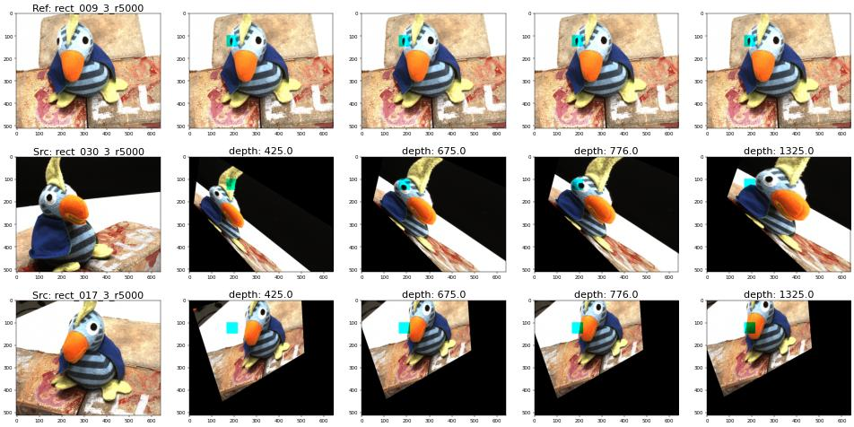
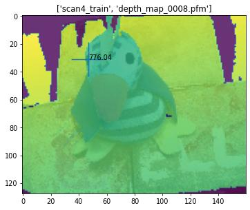

Table of contents
Code | Arxiv | GScholar | mvsnet pytorch
Notes
(2024-10-11)
- 可微单应性变换: “Differentiable” means “Matrix multiplication”
多视图三维重建技术发展 - bilibili推荐
- slides 是用 XMind 做的
Task
The model predicts a single depth map at once instead of an entire scene:
-
MVSNet can reconstruct a large scene by performing per-view depth map estimation repeatedly.
“Per-view” also appears in Point-Based Neural Rendering with Per-View Optimization - Inria.
-
The estimated depth map of the reference view is a weighted sum of multiple predefined depth values, where the weights are regressed from the variance of multi-view cost volumes by a 3D UNet-like network.
-
A cost volume is a structure-fixed container (file holder) in the reference camera space, with each compartment holding a source view’s feature map that requires warping to align with the camera pose and depth before being inserted into each slot.
-
(2023-12-13) In contrast, NeRF lacks a unified spatial structure to facilitate multi-view geometry consistency.
Per-ray sampling & Scene-specific
-
Each view samples depths and maintains a point cloud in its own frustum for rendering (not for reconstructing the global geometry), and the fine-stage sampling results in each ray having different sampled points.
- (2024-02-19) The sampled points don’t have standardized geometric structure, because NeRF is a “continuous” filed, whose continuity is achieved by an MLP. NeRF encompassed multi views into a Radiance filed, so the scene geometry is not directly modeled and constrained.
Consequently, multi-view (geometry) inconsistency (floater) is incurred.
-
NeRF samples per ray rather than the whole space because it employs the volume rendering method to generate view-dependent images. The primary goal is achieving accurate pixels by optimizing the alignment of volume density σ and voxel color c on an arbitrary piont due to the volume rendering equaiton, while the overall geometry is not focused specifically.
In other words, since what NeRF learned is the match between density and voxel color, even if the densities (geometry) are wrong, with colors compensated, the composition could be plausible. Despite the multi-view consistency constraint during training, the geometry estimation (surface) is inherently biased. (NeuS)
On the other hand, because the correspondence between volume density and voxel color is different for various scenes, the MLP network of NeRF is scene-specific.
-
Similarly, PixelNeRF regress densities and colors from pixel-wise image features in the frustum of each viewpoint as well, instead of the world space. And multiple views’ results get aggregated by taking average finally.
-
Per-ray and fine-stage sampling decides NeRF is a scene-specific representation because each region is not reconstructed equally. Although some generalizable NeRFs predict density and color from image features, the precision won’t be high if only image features are input without providing explicit geometry structures.
-
-
(2023-12-15) The whole space to be reconstructed is split (divide-and-conquer strategy) with some assumption instead of estimating from null. CVPR2023|基于深度学习MVS的最新进展 GeoMVSNet - 3D视觉工坊
-
The resolution of a cost volume is fixed (point-mvsnet). A cost volume is a voxel grid to some extent.
The pipeline of MVSNet:
Implicit Camera Pose
-
“Arbitrary camera geometries” prevent the direct comparision among all multi-view feature maps (due to the enormous disparity in observations?).
In contrast, 2-view stereo is free from that problem because after pre-rectification, the matching cost of a pair of feature maps is only attributed to the disparity between the pair of images. (?)
“Arbitrary camera geometries” means that the epipolar constraint served as the base of two-view stereo could fail, e.g. when no overlapping regions exist in the 2 views. In such a case, however, homography still holds. homography - Carleton UniversityTherefore, MVSNet transforms all feature maps into the reference-view camera space.
-
Homography warping injects camera geometries into the 2D CNN implicitly.
Because the convolution and homography (warping) both are linear operations, they can be switched. Thus, warping the feature map is equivalent to warp the source images followed by convolution. Consequently, the convolution layer (feature extractor) is trained on an image set that implies the camera geometries.

-
(2023-12-19) Note: The source image (or feature map) is not mapped onto the depth plane. They’re mapped into the reference camera viewpoint to watch the scene.
By applying different homographies solved with the predefined depth planes, the source image is warped uniquely. Thus, the features at the same location vary.

-
Overall, as depth increases, the source images are go backward.
-
(2024-03-17) The above effect is like that a source image is seen from the reference view. It’s like watching TV from another angle. This is because when restoring depth values for all pixels, they are assigned with a common depth value to become 3D points (on a depth plane) Code. During training, there are 192 assumed depth values to be assigned on pixels, and then the network is required to predict which depth each pixel is, resulting in a correct pixel-wise depth.
With the correct depth map, applying homography will lead to overlapping for the common area between src and ref images.
This differentiates homography from epipolar geometry, where a point is projected onto different views to retrieve feature vectors.

-
(2023-12-20) As ray marches, for epipolar geometry, the projected pixel is moving along the epipolar line. However, for homography, the source image keeps warping using the increasing depth, resulting in the same effect that the projected location moves along the epipolar line.
-
And the directions of data flow are opposite. Epipolar is from 3D points at different depths to a source image, whereas homography is from different warped source images to a common 3D point.
-
-
The reason of performing homography warping on feature map rather than source images could be reducing indexing time with a small resolution?
-
(2023-12-15) Maybe to avoid performing too many convolutions. A source image does convolution once and the feature map is warped 192 times.
-
(2023-12-23) Maybe the author got inspired by the CNN-based 2-view stereo matching, where camera parameters are disregarded when applying CNN onto 2 pre-rectified images. In contrast, MVSNet incorporates camera poses implicitly after CNN. In other words, “rectification” is performed on feature maps instead of original images, so as to encode the camera poses into the 2D CNN.
If warping the source image first, many black empty areas will appear and disrupt the following convolution. Thus, perform CNN on source images first and then sample feature maps.
Because the cost volume is built in the reference camera frustum rather than the world space, the coordinates transformation applied is homography $𝐊₁\[𝐑₁|𝐭₁\](𝐊ᵢ\[𝐑ᵢ|𝐭ᵢ\])⁻¹$ rather than only unprojection $(𝐊ᵢ\[𝐑ᵢ|𝐭ᵢ\])⁻¹$. The “implicit” camera pose embedding manner is proposed to generalize the 2-view stereo to multi-view stereo.
Our 3D cost volume is built upon the camera frustum instead of the regular Euclidean space.
-
-
Convolution fuses the neighboring pixels into one feature vector for dense matching. A feature vector is a compact representation of a patch of pixels.
In this way, image size reduced but without losing context information required by matching. Hence, the efficiency is higher than matching the original images directly. The high-dimensional descriptor can lead to correct matching if they’re well-optimized.
-
Every source view passes the identical 2D CNN, so the differences between cost volumes indicate the probabilities of each depth for each pixel.
-
Each “depth slot” within a cost volume stores a 32-channel feature map, which will be regularized to a 1-channel probability map by 3D UNet and softmax.
-
Estimate by Variance
The matching cost is measured by element-wise (pixel-wise, depth-wise, and channel-wise) variance of cost volumes, such that the number of source views is not limited.
A property can be inferred from the mean of multiple views, serving as a synthesized representation. For example, PixelNeRF used the average of projected features from all source views to regress rgbσ per point. However, MVSNet maps the explicit difference (measured by variance) among the same-position feature vectors to a property, i.e., probability of each hypothetical depth for a pixel.
-
The feature vectors at the same location on the warped feature maps from different source images don’t correspond to the same 3D point, because a 3D point projected onto different camera films gets different pixel coordinates.
Thus, the homologous feature vectors (“allele”) at the same relative position from the 3 input images are distinct evidently.
-
Cyan squares are all at the same location [100:150, 165:215].
-
The ground truth depth is around 776:

-
-
(2023-12-15) The variance for each channel of each matched feature vector from 3 cost volumes, for 192 depths is calculated as:
-
The 192 32-channel variance vectors will be fused to 1-D scalars by a 3D CNN.
-
Conv along the depth dimension, kernel size=2 and stride=1: aggregate every two variance vector at adjacent depths.
-
Output channel is 1: combine the covered vectors by channel-wise weighted summation only once.
In a kernel, weighted sum the same channels, and then sum up all channels to produce one of the output channels.
-
-
192 variance scalars will be normalized by softmax to 192 probabilities for each depth value.
-
Depth map is a summation of 192 preset depths weighted by probabilities.
-
-
The variance of the “position-matched” feature vectors from a pair of source feature maps at each depth is interpreted as each depth’s probability for a pixel:
-
A source image is warped using a homography, solved with a certain depth $dₙ$, to supplement the reference view with information from a lateral perspective, although the scale doesn’t match:

If the scale matches, the pixels on the ref and source views projected from a common 3D point will overlapped, and the depth of that 3D point is found. (Refer to the test result in another post.)
-
The feature map of the source image is sampled into a warped feature map.
-
Feature vectors at the same location
are matched?do not match a common 3D point. -
The variance of the feature vectors pertaining to a depth is calculated
High variance means the patches that a point projected onto each view are distinct, leading to different feature vectors.
-
3D CNN aggregates adjacent variance vectors along 3 directions into a scalar variance.
3D CNN is a smooth constraint to filter the noise in the cost volume caused by non-Lambertian surfaces and object occlusions.
-
Normalize 192 variance by Softmax to obtain the probability distribution of depths.
-
Why does the correct depth has the highest variance?
-
Why use variance?
high variance means high probability.
为什么高方差意味着高概率呢？？？
- 把一组照片的 homography 效果做出来看看
- Read: Rethink depth esti and IS-MVSNet
- Google search: “why does MVSNet use the variance to regress the probability of depths?”
Because the exact depth for a pixel results in other views’ “deny” since the matching pixel on other source images doesn’t correspond to that depth due to the viewpoint shifts.
changing viewpoint will change distance from the observing point to the camera as well.
a feature vector represents a patch of pixels, the area with high rgb-variance means geometry changes.
(2023-12-16) Each variance vector is attributed to 3 feature vectors:
 |
 |
|---|---|
| epipolar | homography |
-
The epipolar reminds me the view fusion in GNT, where multi-view features are fused by " subtraction attention".
-
(2023-12-20) However, MVSNet is not epipolar. The feature 3 vectors are at the same location with the underlying feature maps changing.
But essentially, homography is epipolar in terms of variance vectors ( not actual 3D points). The feature vectors on the epipolar line are shifted to the location of the reference feature.
Succinctly, in epipolar, the projection changes (moves), while in homography, the feature map changes (warps).
I probably thought of (on 2023-12-16) that after warping, the feature vectors at the same location correspond to a same 3D point, like eipolar. But that’s not right even for the warping with the accurate depth value (776 mm) as shown in the above demo. The image (or feature map) moved indeed after warping, but not got the exact position corresponding to the common 3D point.
- However, if the epipoles are at infinite (no overlapping observation), the variance matching is poor (under-determined system has inifinitely many solutions normally), and a reference pixel is falsely matched resulting in false probabilities distribution: Multiple depth values are plausible and gain similar probabilities.
The correct warping correspond to the correct depth, and vice versa.
-
(2023-12-20) 3D CNN is a classifier to find the most possible depth value among 192 hypotheses based on the input variance, which is produced from a 2D CNN.
Therefore, the job of the 2D CNN is to make the features cooresponding to the correct depth having the biggest variance. Such that the aggregated variance will still be the most salient after softmax. And finally, it takes the highest weight.
-
(2023-12-20) If the above analysis that the homography is equivalent to epipolar geometry for building variance vectors is true, then the reference pixel should find the matched pixel on the epipolar line projected from the correct depth.
The source feature map is warped differently according to various depth values. The feature vectors at a common location of all the input images differs. Their variance is the matching cost for a hypothetical depth. Since a feature vector indicates the context around a pixel, the high variance means the behind pixels are not similar. So they should not be matched. But they use softmax to identify the highest variance.
doubt: I still believe the variance should be minimized at the correct depth. 计算机视觉中cost-volume的概念具体指什么？ - 知乎
(2024-02-19) The PointMVSNet paper said MVSNet used “soft argmin” in sec3.1.
Cost Volume
A cost volume 𝐕ᵢ corresponding to a source view’s feature map 𝐅ᵢ constitutes multiple warped feature maps 𝐕ᵢ(d), which can be obtained by specifying a depth and a [𝐑|𝐭] that transforms the reference camera to the source view camera.
As shown below, a cost volume for a source feature map contains 192 warped feature maps at corresponding depths, while the cost volume for the reference feature map is a replication of itself 192 times.
-
A feature map has 32 channels, so a cost volume is a 4-D tensor: (C=32, D=192, H=128, W=160).
-
(2023-12-12) Homography isn’t used to map the pixel of reference-view feature map to source-view feature map, but instead warp the source feat to reference feat via sampling cooresponding matching points.
(2024-04-28)
-
When searching “深度” in the QQ group, I found the comment of AURORA on mvsnet on 23/10/08: “（MVSNet只在 DTU 数据集上训的，为啥在其他数据集上也有效果）因为 costvolume 相当于训练了一个 feature extractor”
I think the inputs are already feature maps. The network gotten trained is the 3D UNet, that maps variance volume to probability volume.
Even if the 3D UNet is really a “feature extractor”, the feature is extracted from the variance volume.
Code Understand
A complete demo of homography warping: gist
According to the principle of homography, pixels on the reference view’s feature map are mapped linearly onto each source view.
Thus, a warped source feature map is sampled (F.grid_sample) from the original source feature map at the mapped pixels.
-
Construct coordinates of pixels:
1 2 3 4h, w = 128, 160 vu = torch.cartesian_prod(torch.arange(h), torch.arange(w)) uv = torch.flip(vu, [1]) # (hw,2), As x varies, y is fixed uv1 = torch.cat([uv, torch.ones(len(uv), 1)], dim=-1) # (hw,3) -
Map coordinates on the reference image to a source image.
The mapping matrix is 𝐊ᵢ
\[𝐑ᵢ|𝐭ᵢ\](𝐊₁[𝐑₁|𝐭₁])⁻¹. Therefore, each view calculates its own
\[𝐑ᵢ|𝐭ᵢ\]proj𝐊ᵢin advance.
Use $[\\^𝐑|\\^𝐭]$ to represent the mapping for a pixel from the reference image to a source image, so that the pixel-wise (u,v,1) and depth-wise (d) matmul is:
$$ \begin{bmatrix} u' d' \\\ v' d' \\\ d' \\\ 1 \end{bmatrix}= \begin{bmatrix} \\^𝐑 &| \\^𝐭 \\\ 0 &| 1 \end{bmatrix} \begin{bmatrix} ud \\\ vd \\\ d \\\ 1 \end{bmatrix} = \\^𝐑\_{3×3} \begin{bmatrix} u \\\ v \\\ 1 \end{bmatrix}⋅d + \begin{bmatrix} t₁ \\\ t₂ \\\ t₃ \\\ 1 \end{bmatrix} $$-
where [ud, vd, d,1]ᵀ is homogeneous coordinates for translation, and [u, v, 1]ᵀ is homogeneous coordinates for perspective division to present a 3D scene on a 2D image.
-
The translation $\\^𝐭$ is not affected by d, so it’s separated.issue 10
1 2 3 4 5 6 7 8src_KRt = intrisics @ extrinsics[:3,:4] proj = src_KRt @ torch.inverse(ref_KRt) rot, trans = torch.split(proj, [3,1], dim=-1) # (4,3), (4,1) rot_uv1 = rot[:3] @ uv1.t() # (3, hw) # depth_values: d = 425. + 1.06*2.5* torch.arange(192).view(1,-1,1) # (1,192,1) rot_uvd = rot_uv1.unsqueeze(1).expand(3,192,-1) *d # (3,192,hw) pix_proj = rot_uvd + trans[:3].unsqueeze(1).expand(3,192,1)- The above procedures of determining projection locations are not involving learnable feature vectors.
Thus,
with torch.no_grad():runtime context isn’t actually effective. And the “differentiable” is achieved byF.grid_sample().
-
-
Sample the source feature map at the mapped coordinates
1 2 3 4u_src = 2*(pix_proj[0] / pix_proj[2]) / (w-1) - 1 # (192, hw) v_src = 2*(pix_proj[1] / pix_proj[2]) / (h-1) - 1 uv_src = torch.stack([u_src, v_src], dim=-1) # (192, hw, 2) warped_feat = F.grid_sample(src_feat, uv_src.view(bs, 192*h, w, 2)) -
Merge all feature maps’ cost volume into their variance:
$$ \begin{aligned} \frac{ ∑_{i=1}^N (𝐕ᵢ - \bar{𝐕})² }{N} &= \frac{∑_{i=1}^N (𝐕ᵢ² - 2𝐕ᵢ \bar{𝐕} + \bar{𝐕}² ) }{N} \\\ &= \frac{∑_{i=1}^N 𝐕ᵢ²}{N} - \frac{∑_{i=1}^N 2𝐕ᵢ \bar{𝐕} }{N} + \frac{∑_{i=1}^N \bar{𝐕}² }{N} \\\ &= \frac{∑_{i=1}^N 𝐕ᵢ²}{N} - \frac{ 2\bar{𝐕} ∑_{i=1}^N 𝐕ᵢ }{N} + \frac{N \bar{𝐕}²}{N} \\\ &= \frac{∑_{i=1}^N 𝐕ᵢ²}{N} - \bar{𝐕}² \end{aligned} $$1c = volume_sq_sum / n_src - (volume_sum / n_src)**2 -
Compress the 3D 32-channel volume variance to 1-channel scalar for each depth through a 3D UNet:
- Note: The original UNet concats the feature maps on the same level, whereas here the feature vectors are added up, like skip connections in restnet.
Then, the logits will be normalized by softmax to become a vector of probabilities.
-
The depth of one pixel is a weighted sum (expectation) of 192 depth values.
-
Kind of like “alpha compositing”, where the opacity corresponds to the probability and the color of each filter is the depth value here.
-
Or it can be interpreted as a linear interpolation for 192 depth values.
-
Each pixel has a distinct depth-probability distribution derived from feature maps.
-
-
Photometric consistency
prob_volume→prob_volume_sum4: 4 * average of every 4 depths’ prob → retrieve the “4 times average prob” fromprob_volume_sum4according to thedepth_index, which is a weighted sum (expectation) of 0 ~ 192 using theprob_volume.- The quality of depth estimation is measured by the sum of 4 nearby probabilities for a predicted depth. If this probability sum is high, the estimation is reliable.
-
Refine Network
- T&T dataset doesn’t provide normal information to generate mesh surface, and render images for each viewpoint, so the depth map cannot be finetuned by the reference image.
Point Cloud
-
Filter Depth Map based on photometric (probability map>0.8), and geometric (re-projection error less than 1 pixel) consistencies
-
The function for “geometric consistency”:
-
Input: 10 source views of a reference view,
-
Output: A mask for the reference image.
-
-
Geometric consistency implementations:
-
check_geo_consistency()in kwea123/CasMVSNet_pl/eval.py -
check_geometric_consistency()in xy-guo/MVSNet_pytorch/eval.py
-
-
-
Fuse multi-view depth maps based on visibility, and then unproject the unified depth map.
Actice Recall Exercise
(2025-04-10)
-
不要画相机，不要想象相机，MVSNet 方法的 setting 中，所涉及到的对象只有 图片(平面)，只是从不同方向去看图片。
-
方法的核心是代价体
Play
Profiler
The training is slow, almost as slow as NeRF. Why?
There is a profile() function provided.
(2023-12-09)
DTU
The preprocessed DTU includes 79 training scans (scenes) and 22 testing scans. Each scan has the same 49 camera poses with 7 different light conditions.
Therefore, each scan has 79×49×7 = 27097 pictures serving as reference images. Each reference image is assigned with 10 images taken with nearest poses under the same light condition.
During training, 3 source images are used to estimate the depth map of the corresponding reference image, while 5 source images are used during testing.
The depth range is determined based on the depth_min (425.0) and depth_interval * interval_scale (2.5 × 1.06) between two adjacent fronto-parallel planes.
For example, if there are 192 planes, the max depth is
425 + (2.5 × 1.06) × (192-1) = 931.15
|
|
Code warps the source feat map in a backward way by reversing the target coordinates back to the source feat map and then sampling, rather than computing the target coordinates directly from the homography represented with planes.
The pixel transferring from the (target) reference plane to a source plane is performed by 3 steps: rotate first, then assign depths, finally add translation.
|
|
Refer to eq.(11) in Multi-View Stereo中的平面扫描(plane sweep) - ewrfcas的文章 - 知乎
$$ R $$Read GT Depth
(2023-12-19)
-
Find the ground-truth depth map for an input image (512, 640).
The preprocessced DTU (“dtu_training.rar”) only contains 1/4 depth maps with size 128x160, aligned with the size of feature maps. So, each file (“DTU_Depths_raw/scan1_train/depth_map_0000.pfm”) is 80K.
While the folder “DTU_Depths_raw/” (“Depth_raw.zip” used in MVSNeRF) includes full-size pfm with the same resolution 1200x1600 as the DTU images. An example: “DTU_Depths_raw/scan1/depth_map_0000.pfm”: 7.32M
-
Read depth map with function
read_pfm():1 2 3 4 5 6 7 8 9 10 11 12 13 14 15 16 17 18 19 20 21 22import imageio import matplotlib.pyplot as plt from pathlib import Path from datasets.data_io import read_pfm depth_path = Path("../DTU_Depths_raw/scan4_train/depth_map_0008.pfm") depth_pfm, scale = read_pfm(depth_path) # (128,160), 1.0 depth_png = imageio.imread("../DTU_Depths_raw/scan4_train/depth_visual_0008.png") orig_rgb = imageio.imread("../mvs_training/dtu/Rectified/scan4_train/rect_009_3_r5000.png") orig_rgb = orig_rgb[::4,::4,:] # reduce 4 times q_x, q_y = int(190/4), int(125/4) # query point plt.text(x=q_x, y=q_y, s=f'{depth_pfm[q_x, q_y]:.2f}') plt.vlines(x=q_x, ymin=q_y-12.5, ymax=q_y+12.5) plt.hlines(y=q_y, xmin=q_x-12.5, xmax=q_x+12.5) plt.imshow(depth_pfm) # plt.imshow(depth_png, alpha=1) plt.imshow(orig_rgb, alpha=0.2) plt.title(str(depth_path).split('/')[2:])
### LLFF
Analyses:
What’s the key of its generalizability?
Environment
(2024-02-21)
Referring to this issue#101 and issue#149
|
|
|
|
Validate:
|
|